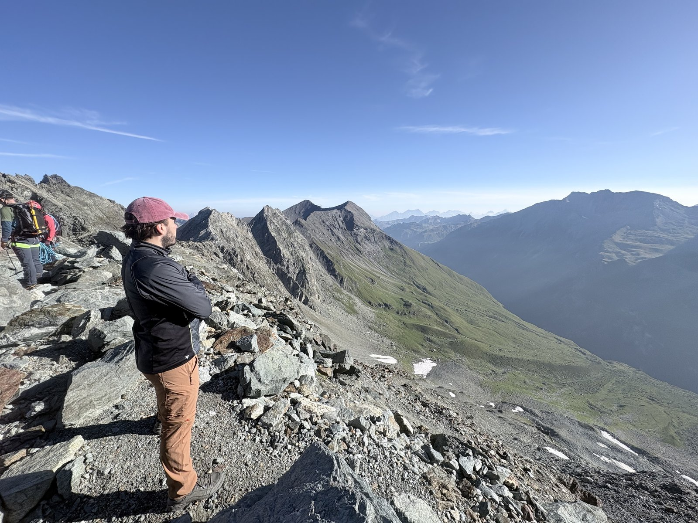
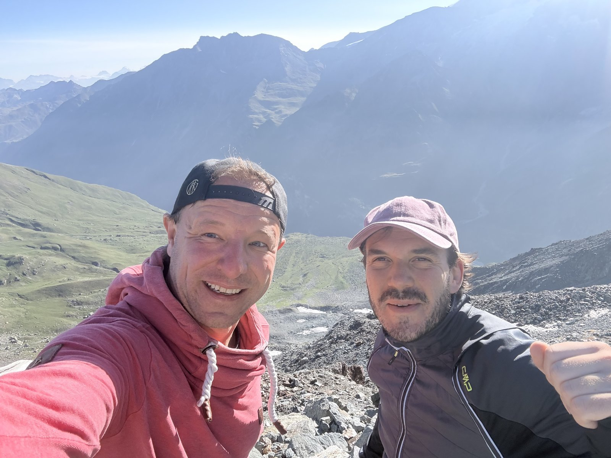
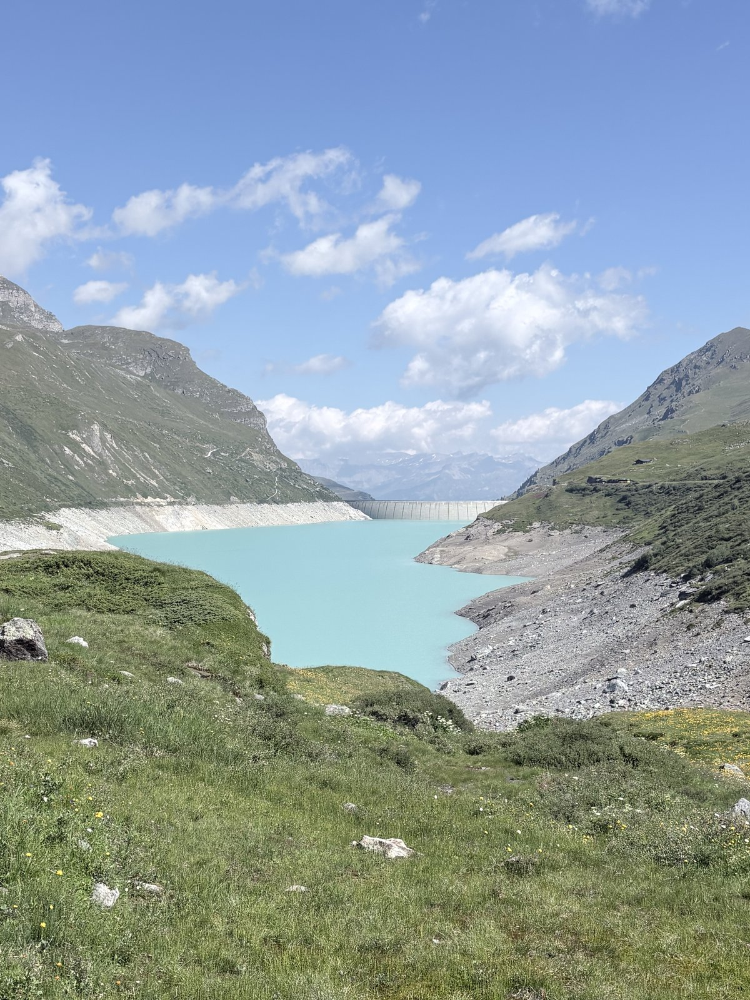
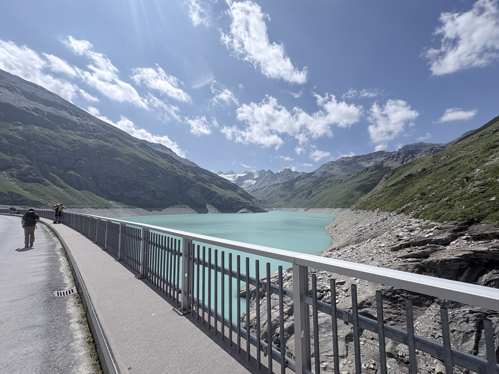
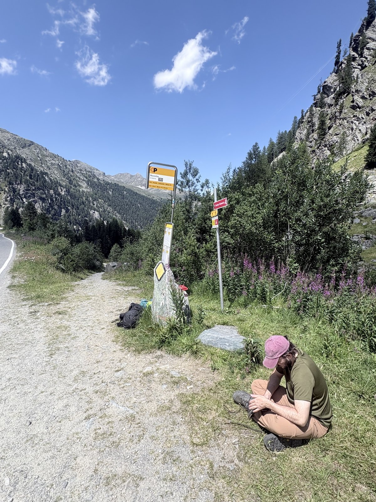
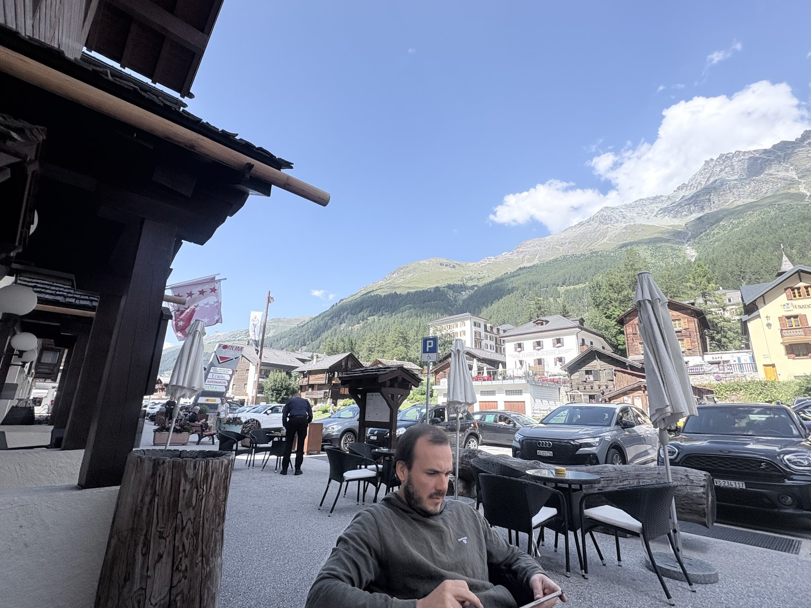
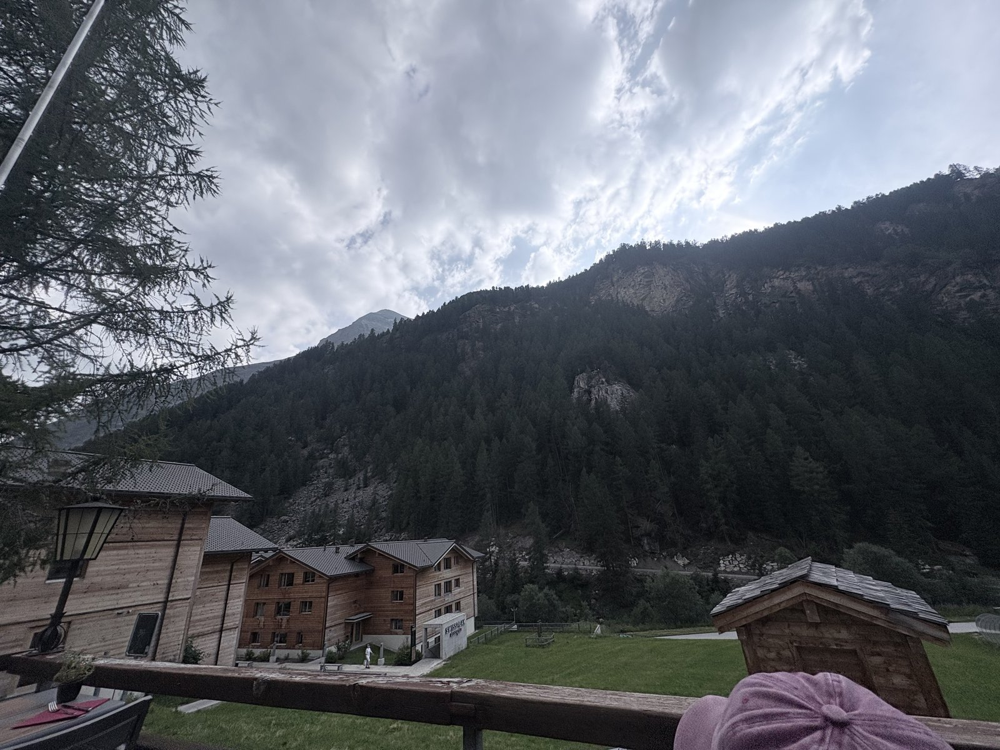
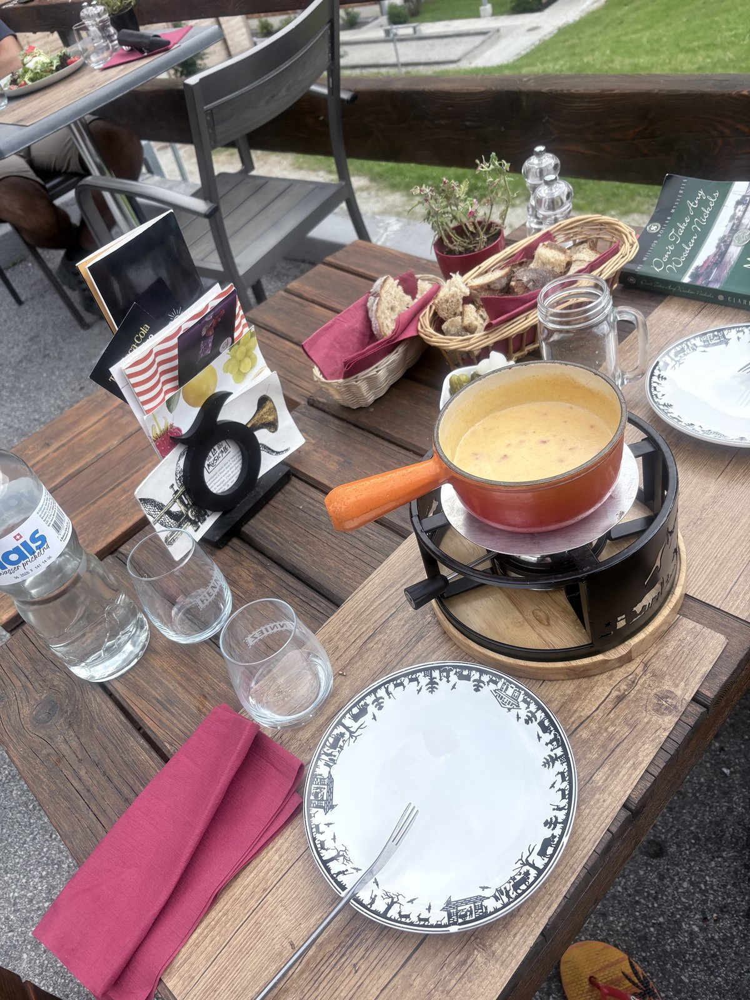
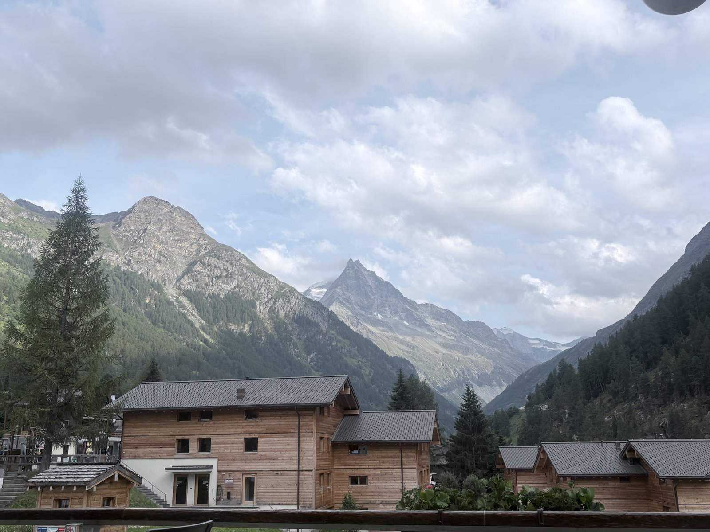

After the hut evening by the glacier, today is the opposite: a pure descent day. The plan says 16.2 km, 6:15 h, a mere 605 m of ascent – but 1,757 m of descent, down from the Cabane de Moiry (2,825 m) into the Val d'Anniviers to Zinal (1,675 m). We followed the route exactly as planned: a short stretch of ridge first, then down to the reservoir, across the dam, and down long switchbacks through the forest to Zinal.
Setting off in the morning: Just past the hut the trail still crosses a stretch of rocky terrain before swinging down towards the lake – in the low morning light the whole basin still lies in shadow, only the peaks opposite already glow. Ahead of us on the ridge, a party apparently roped up for a glacier or firn crossing – a scene from another decade, a reminder that in this terrain high-alpine routes and perfectly ordinary hiking trails often run just metres apart.

Looking back across the morning ridge – the roped party in the distance wasn't our group, apparently headed for a more demanding objective.

Shortly after setting off, at the highest point of the traverse below the Sasseneire (3,254 m): one more look back before the trail turns decisively downhill.
Back at the Lac de Moiry: From above, the reservoir looks quite different again from the day before – the turquoise water framed by the bare moraine slopes at the head of the valley. The descent leads straight to the 148 m arch dam that has held back the lake since 1958.

Lac de Moiry from a new angle – from above, on the way down from the hut.

On foot across the dam – behind us the head of the valley with its peaks, ahead the final push down into the valley.
Rest stop at Morette: Beyond the dam the trail drops through long switchbacks into larch and arolla pine forest – a noticeable change after two days above the treeline. At the Morette junction, surrounded by flowering fireweed, we take the first proper break since breakfast. A small car park marks the lowest point here that you could also reach by road – for us, just a rest stop, not a destination.

A well-earned rest at the Morette junction – half the vertical metres are done, but there is still a good 1,000 m further downhill to Zinal.
Arrival in Zinal: From Morette the descent continues through the forest for quite a while before the gradient finally eases and the valley opens up. Zinal (1,675 m) is the highest village in the Val d'Anniviers, ringed by an imposing crown of four-thousanders – including the Weisshorn and the Zinalrothorn – and traditionally a starting point for high-alpine climbs as much as for the Haute Route. After 1,750 m of descent, the first order of business in the village is accordingly simple: put your feet up.

Recovering on a café terrace right in the village – all around, the usual summer scene of a Valais mountain village: slate-roofed chalets and the cantonal flag with its 13 stars in the wind.

The view from our lodging: clouds still sit low in the valley basin, only clearing towards evening.
Fondue to finish: After two days of trail food from the backpack, the end of the first half of the trek calls for what you always crave in the Valais – cheese fondue, with bread, pickled onions and gherkins.

The well-earned dinner: fondue in the caquelon – after 1,750 m of descent, thoroughly deserved.

After dinner the sky finally clears – a view of one of the striking peaks at the head of the Zinal valley.